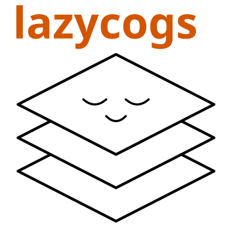

Home

Open a lazy (band, time, y, x) xarray DataArray from thousands of cloud-optimized GeoTIFFs. No GDAL required.
<xarray.DataArray (band: 3, time: 121, y: 7100, x: 13000)> Size: 67GB
[33504900000 values with dtype=int16]
Coordinates:
* band (band) <U5 60B 'red' 'green' 'blue'
* time (time) datetime64[s] 968B 2025-06-01 2025-06-02 ... 2025-09-30
* y (y) float64 57kB 2.22e+06 2.22e+06 2.22e+06 ... 2.93e+06 2.93e+06
* x (x) float64 104kB -7e+05 -6.998e+05 -6.998e+05 ... 5.998e+05 6e+05
Attributes:
_stac_backend: MultiBandStacBackendArray(bands=['red', 'green', 'blu...
_stac_time_coords: 2025-06-01 … 2025-09-30 (n=121)Coordinate convention¶
lazycogs.open() returns a DataArray whose y coordinates follow the standard
north-up raster convention with the origin in the top left (not bottom left).
That is, y coordinates are descending from north to south. In other words,
y label 0 is the northernmost pixel and y[-1] is the southernmost. This
matches the affine transform and is consistent with odc-stac, rioxarray, and
GDAL.
Use sel(y=slice(north, south)) (high to low) for spatial subsetting.
What is lazycogs?¶
lazycogs lets you materialize a lazy xarray DataArray view of massive STAC-indexed data archives in any CRS and resolution. Opening the array is nearly instant because no COGs are read until you request pixels. lazycogs queries the stac-geoparquet dataset using rustac to find only the COGs that intersect a spatial and temporal selection, fetches only the relevant pixel windows using async-geotiff, and reprojects into your target grid.
Note: lazycogs only reads GeoTIFFs. If your assets are in another format, lazycogs is not the right tool.
Here is a summary of the libraries lazycogs uses for each step:
| Task | Library |
|---|---|
| STAC search + spatial indexing | rustac (DuckDB + geoparquet) |
| COG I/O | async-geotiff (Rust, no GDAL) |
| Cloud storage | obstore |
| Reprojection | pyproj + numpy |
| Lazy dataset construction | xarray BackendEntrypoint + LazilyIndexedArray |
Installation¶
Minimal example¶
import lazycogs
import rustac
from pyproj import Transformer
dst_crs = "EPSG:5070"
dst_bbox = (-400_000, 2_500_000, -200_000, 2_700_000)
transformer = Transformer.from_crs(dst_crs, "epsg:4326", always_xy=True)
bbox_4326 = transformer.transform_bounds(*dst_bbox)
# Search a STAC API and cache results to a local stac-geoparquet file.
await rustac.search_to(
"items.parquet",
"https://earth-search.aws.element84.com/v1",
collections=["sentinel-2-c1-l2a"],
datetime="2025-06-01/2025-08-31",
bbox=bbox_4326,
)
# Open a fully lazy (band, time, y, x) DataArray. No COGs are read yet.
da = lazycogs.open(
"items.parquet",
bbox=dst_bbox,
crs=dst_crs,
resolution=10.0,
)
Async loading¶
When you are already inside an async context (for example, a Jupyter notebook running on an asyncio loop), you can trigger chunk reads without blocking the event loop:
# Fetch data asynchronously and load into memory in-place.
subset = await da.isel(x=slice(0, 10), y=slice(0, 10), time=slice(0, 10)).load_async()
load_async uses xarray's async protocol, which dispatches through
MultiBandStacBackendArray.async_getitem and stays on the caller's
event loop. Multiple concurrent chunk reads overlap naturally, so the
async path can be faster than the synchronous da.compute() when
reading many chunks inside an already-running loop.
Get started with the Quickstart. Evaluating lazycogs against alternatives? See Performance.